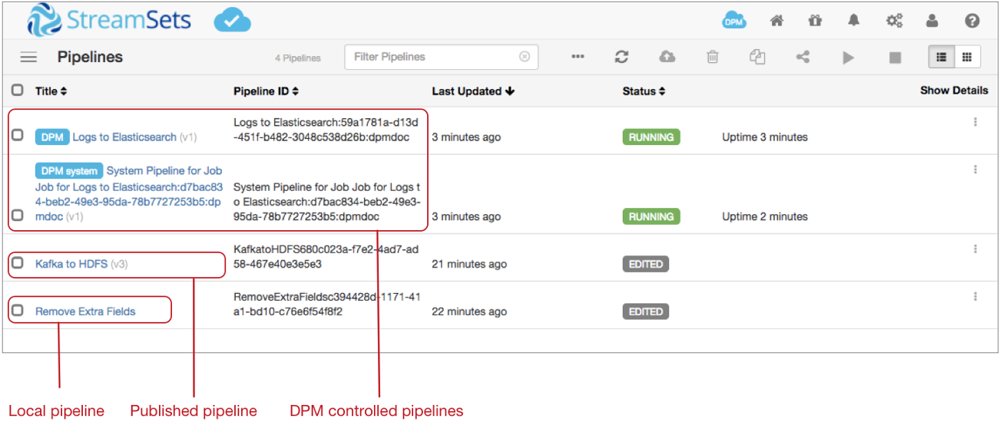
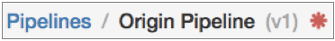
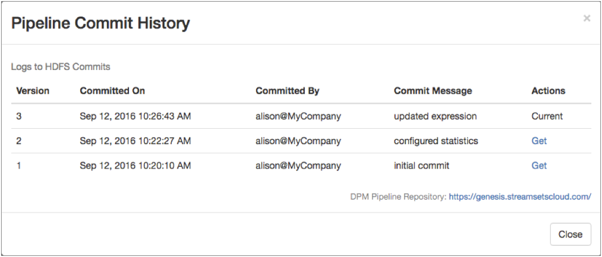

Pipeline Management with Control Hub
After you register a Data Collector with StreamSets Control Hub, you can manage how the pipelines work with Control Hub.
You develop pipelines in Data Collector, and then publish or import them to Control Hub. Within Control Hub, you create jobs to determine the Data Collectors that run the pipelines. When you start a job on a group of Data Collectors, Control Hub remotely runs a pipeline instance on each Data Collector.
Managing pipelines with Control Hub involves completing the following tasks:
- Understanding the different types of pipelines that can run on a registered Data Collector.
- Publishing pipelines to Control Hub.
- Viewing pipeline commit history, and optionally getting a previous pipeline version.
- Downloading published pipelines from Control Hub.
If you have not registered a Data Collector, you can still develop pipelines in the Data Collector and then export the pipelines for use in Control Hub.
Pipeline Types
- Local pipelines
- Local pipelines are pipelines that are managed by a Data Collector and run locally on that Data Collector. Data Collector displays local pipelines when they are running and not running.
- Use a Data Collector to design, start, stop, and monitor local pipelines.
- Published pipelines
- Published pipelines are local pipelines that have been published to Control Hub. You can still use Data Collector to manage and locally run published pipelines on that Data Collector. Data Collector displays published pipelines with the current version number, and when they are running and not running.
- Control Hub controlled pipelines
- Control Hub controlled pipelines are pipelines that are managed by Control Hub and run remotely on registered Data Collectors. Data Collector displays Control Hub controlled pipelines when they are running.
- Control Hub controlled pipelines include the following:
- Published pipelines run from Control Hub jobs.
After you publish or import pipelines to Control Hub, you add them to a job, and then start the job. When you start a job on a group of Data Collectors, Control Hub remotely runs an instance of the published pipeline on each Data Collector. When the Control Hub job stops, the running published pipeline also stops, and can no longer be viewed in the Data Collector. Use Control Hub to start, stop, and monitor published pipelines that are run from jobs.
- System pipelines run from Control Hub jobs.
Control Hub automatically generates and runs system pipelines to aggregate statistics for jobs. System pipelines collect, aggregate, and push metrics for all of the remote pipeline instances run from a job. When you start a job on a group of Data Collectors, Control Hub picks one Data Collector to run the system pipeline. When the Control Hub job stops, the running system pipeline also stops, and can no longer be viewed in the Data Collector.
Control Hub generates system pipelines as needed. Published pipelines that are not configured to aggregate statistics do not require system pipelines.
- Published pipelines run from Control Hub jobs.
Viewing Pipeline Types in Data Collector
Let's look at a sample Data Collector Home page to see how Data Collector displays local pipelines, published pipelines, and Control Hub controlled pipelines:

The Data Collector displays the following pipelines:
- Local pipeline that was developed in this Data Collector and can be run locally on this Data Collector. Local pipelines are listed by title. In the image above, Remove Extra Fields is a local pipeline that is not running. The Remove Extra Fields pipeline has not been published to Control Hub, as indicated by no version number after its title.
- Published pipeline that was published to Control Hub and can still be run locally on this Data Collector. Published pipelines are listed by title and version number. In the image above, Kafka to HDFS is a published pipeline that is not running.
- Running published pipeline that was published to Control Hub, then run from a job. Published pipelines that are remotely run from jobs are listed with a "Control Hub" label.
- Running system pipeline that collects, aggregates, and pushes metrics for all of the remote pipeline instances run from the job. Running system pipelines are listed with a "Control Hub system" label.
Publishing Pipelines to Control Hub
After you finish developing pipelines in Data Collector, you publish the pipelines to the Control Hub pipeline repository. You can publish pipelines that are valid.

-
From the Home page, select pipelines in the list and
then click the Publish Pipeline icon
 .
Or to publish a pipeline from the pipeline canvas, click the SCH
Options icon
.
Or to publish a pipeline from the pipeline canvas, click the SCH
Options icon  , and then click
Publish Pipeline.
The Publish Pipeline dialog box appears.
, and then click
Publish Pipeline.
The Publish Pipeline dialog box appears.
Reverting Changes to Published Pipelines
If you update a published pipeline but decide not to publish the updates as a new version, you can revert the changes made to the pipeline configuration.
-
In the pipeline canvas, click the SCH Options icon
, and then click Revert
Changes.
- In the confirmation dialog box, click Yes.
Viewing Pipeline Commit History
You can view the commit history of any pipeline that has been published to Control Hub. If the pipeline has been committed multiple times, you can get an older version of the pipeline and then continue editing the older version.
If you edit and then publish an older version, Control Hub updates the minor version number rather than the major version number. For example, you have a pipeline with three versions. You get version 2 of the pipeline, edit the pipeline, and then publish the pipeline. Control Hub versions the current pipeline as 2.1. So you now have four versions of the pipeline, with version 2.1 of the pipeline marked as the current version:
- 2.1
- 3
- 2
- 1
To view pipeline commit history:
-
In the pipeline canvas, click the SCH Options icon
, and then click Commit
History.
The Pipeline Commit History dialog box opens. For example, a pipeline with three versions displays the commit history as follows:

Downloading Published Pipelines
When you download a pipeline from Control Hub, you become the owner of a local instance of the published pipeline. The downloaded pipeline has no connection to the published pipeline.
Exporting Pipelines for Control Hub
If you develop pipelines in a Data Collector that is not registered with Control Hub, you can export the pipelines and then import the pipelines into Control Hub. When a Data Collector is registered with Control Hub, it's simplest to publish the pipelines directly to Control Hub.
You can export a pipeline for use in Control Hub when the pipeline is valid. You can export a single pipeline or a set of pipelines at one time.
When you export a single pipeline, Data Collector generates a JSON file named after the pipeline, as follows: <pipeline name>.json. The generated JSON file includes the definition of each stage library used in the pipeline.
When you export a set of pipelines, Data Collector creates a ZIP file named pipelines.zip.
Data Collector saves the files to your default downloads directory.